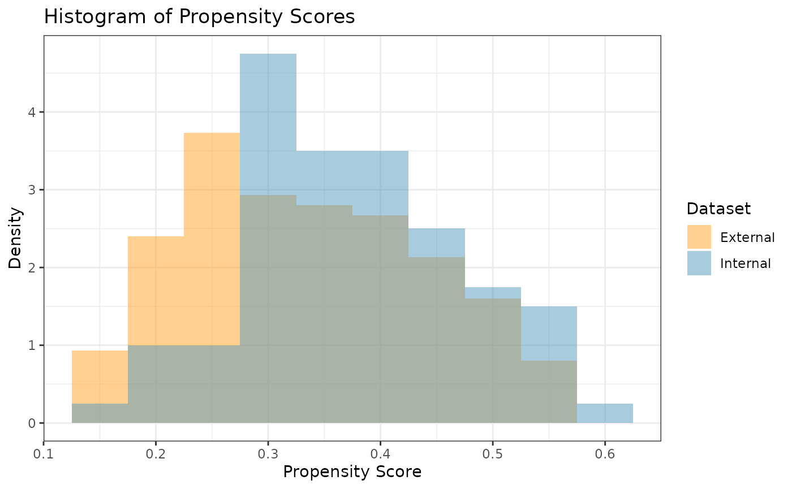
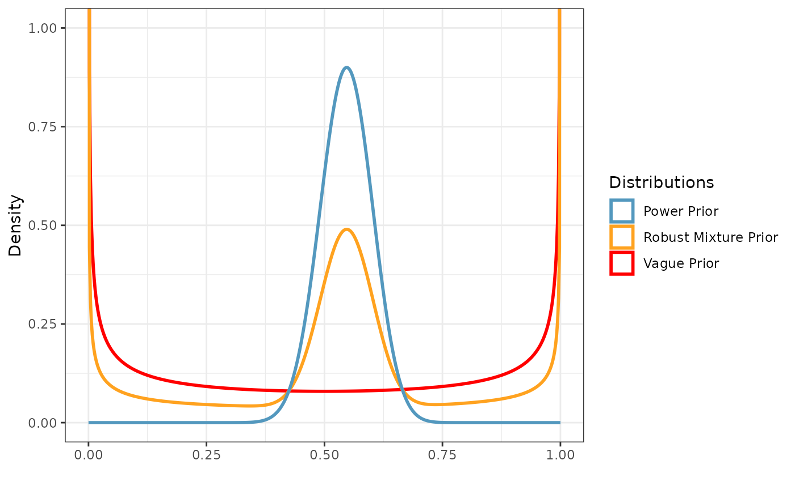
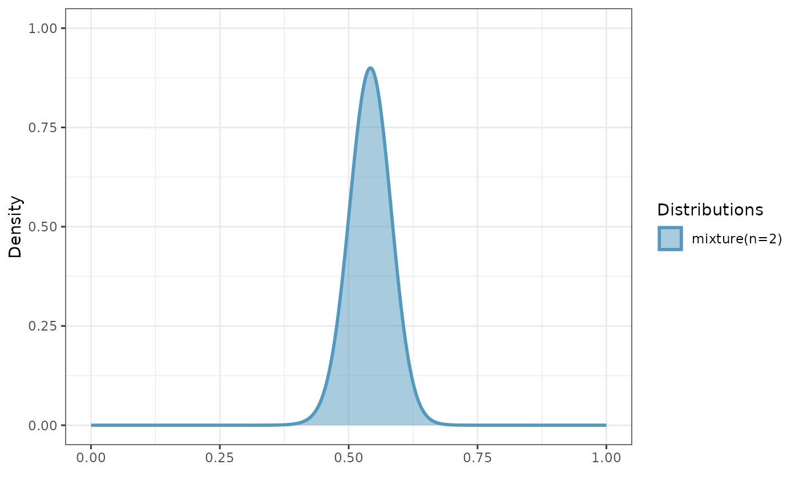
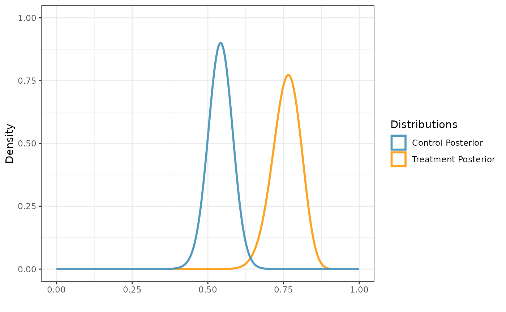

Introduction and Data Description
In this example, we illustrate how to use Bayesian dynamic borrowing (BDB) with the inclusion of inverse probability weighting to balance baseline covariate distributions between external and internal datasets. This particular example considers a hypothetical trial with a binary outcome, and our objective is to use BDB with IPWs to construct a posterior distribution for the control response rate . We will use simulated internal and external datasets from the package where each dataset has a binary response variable (1: positive response; 0: otherwise) and four baseline covariates which we will balance.
The external control dataset has a sample size of 150 participants, and the distributions of the four covariates are as follows: - Covariate 1: normal with a mean and standard deviation of approximately 65 and 10, respectively - Covariate 2: binary (0 vs. 1) with approximately 30% of participants with level 1 - Covariate 3: binary (0 vs. 1) with approximately 40% of participants with level 1 - Covariate 4: binary (0 vs. 1) with approximately 50% of participants with level 1
The internal dataset has 160 participants with 80 participants in each of the control arm and the active treatment arms. The covariate distributions of each arm are as follows: - Covariate 1: normal with a mean and standard deviation of approximately 62 and 8, respectively - Covariate 2: binary (0 vs. 1) with approximately 40% of participants with level 1 - Covariate 3: binary (0 vs. 1) with approximately 40% of participants with level 1 - Covariate 4: binary (0 vs. 1) with approximately 60% of participants with level 1
library(beastt)
#> Error in get(paste0(generic, ".", class), envir = get_method_env()) :
#> object 'type_sum.accel' not found
library(distributional)
library(dplyr)
#>
#> Attaching package: 'dplyr'
#> The following objects are masked from 'package:stats':
#>
#> filter, lag
#> The following objects are masked from 'package:base':
#>
#> intersect, setdiff, setequal, union
library(ggplot2)
set.seed(1234)
summary(int_binary_df)
#> subjid cov1 cov2 cov3
#> Min. : 1.00 Min. :46.00 Min. :0.0000 Min. :0.0000
#> 1st Qu.: 40.75 1st Qu.:57.00 1st Qu.:0.0000 1st Qu.:0.0000
#> Median : 80.50 Median :62.00 Median :0.0000 Median :0.0000
#> Mean : 80.50 Mean :61.83 Mean :0.3688 Mean :0.3625
#> 3rd Qu.:120.25 3rd Qu.:67.00 3rd Qu.:1.0000 3rd Qu.:1.0000
#> Max. :160.00 Max. :85.00 Max. :1.0000 Max. :1.0000
#> cov4 trt y
#> Min. :0.0000 Min. :0.0 Min. :0.00
#> 1st Qu.:0.0000 1st Qu.:0.0 1st Qu.:0.00
#> Median :1.0000 Median :0.5 Median :1.00
#> Mean :0.5563 Mean :0.5 Mean :0.65
#> 3rd Qu.:1.0000 3rd Qu.:1.0 3rd Qu.:1.00
#> Max. :1.0000 Max. :1.0 Max. :1.00
summary(ex_binary_df)
#> subjid cov1 cov2 cov3
#> Min. : 1.00 Min. :37.00 Min. :0.0000 Min. :0.0000
#> 1st Qu.: 38.25 1st Qu.:58.00 1st Qu.:0.0000 1st Qu.:0.0000
#> Median : 75.50 Median :64.00 Median :0.0000 Median :0.0000
#> Mean : 75.50 Mean :64.28 Mean :0.3533 Mean :0.4533
#> 3rd Qu.:112.75 3rd Qu.:70.00 3rd Qu.:1.0000 3rd Qu.:1.0000
#> Max. :150.00 Max. :90.00 Max. :1.0000 Max. :1.0000
#> cov4 y
#> Min. :0.0000 Min. :0.0000
#> 1st Qu.:0.0000 1st Qu.:0.0000
#> Median :0.0000 Median :1.0000
#> Mean :0.4733 Mean :0.5133
#> 3rd Qu.:1.0000 3rd Qu.:1.0000
#> Max. :1.0000 Max. :1.0000Propensity Scores and Inverse Probability Weights
With the covariate data from both the external and internal datasets,
we can calculate the propensity scores and ATT inverse probability
weights (IPWs) for the internal and external control participants using
the calc_prop_scr function. This creates a propensity score
object which we can use for calculating an inverse probability weighted
power prior in the next step.
Note: when reading external and internal datasets into
calc_prop_scr, be sure to include only the arms in which
you want to balance the covariate distributions (typically the internal
and external control arms). In this example, we want to balance
the covariate distributions of the external control arm to be similar to
those of the internal control arm, so we will exclude the internal
active treatment arm data from this function.
ps_obj <- calc_prop_scr(internal_df = filter(int_binary_df, trt == 0),
external_df = ex_binary_df,
id_col = subjid,
model = ~ cov1 + cov2 + cov3 + cov4)
ps_obj
#>
#> ── Model ───────────────────────────────────────────────────────────────────────
#> • cov1 + cov2 + cov3 + cov4
#>
#> ── Propensity Scores and Weights ───────────────────────────────────────────────
#> # A tibble: 150 × 4
#> subjid Internal `Propensity Score` `Inverse Probability Weight`
#> <int> <lgl> <dbl> <dbl>
#> 1 1 FALSE 0.333 0.500
#> 2 2 FALSE 0.288 0.405
#> 3 3 FALSE 0.539 1.17
#> 4 4 FALSE 0.546 1.20
#> 5 5 FALSE 0.344 0.524
#> 6 6 FALSE 0.393 0.646
#> 7 7 FALSE 0.390 0.639
#> 8 8 FALSE 0.340 0.515
#> 9 9 FALSE 0.227 0.294
#> 10 10 FALSE 0.280 0.389
#> # ℹ 140 more rows
#>
#> ── Absolute Standardized Mean Difference ───────────────────────────────────────
#> # A tibble: 4 × 3
#> covariate diff_unadj diff_adj
#> <chr> <dbl> <dbl>
#> 1 cov1 0.339 0.0461
#> 2 cov2 0.0450 0.0204
#> 3 cov3 0.160 0.000791
#> 4 cov4 0.308 0.00857In order to check the suitability of the external data, we can create
a variety of diagnostic plots. The first plot we might want is a
histogram of the overlapping propensity score distributions from both
datasets. To get this, we use the prop_scr_hist function.
This function takes in the propensity score object made in the previous
step, and we can optionally supply the variable we want to look at
(either the propensity score or the IPW). By default, it will plot the
propensity scores. Additionally, we can look at the densities rather
than histograms by using the prop_scr_dens function. When
looking at the IPWs with either the histogram or the density functions,
it is important to note that only the IPWs for external control
participants will be shown because the ATT IPWs for all internal control
participants are equal to 1.
prop_scr_hist(ps_obj)
prop_scr_dens(ps_obj, variable = "ipw")
The final plot we might want to look at is a love plot to visualize
the absolute standardized mean differences (both unadjusted and adjusted
by the IPWs) of the covariates between the internal and external data.
To do this, we use the prop_scr_love function. Like the
previous function, the only required parameter for this function is the
propensity score object, but we can also provide a location along the
x-axis for a vertical reference line.
prop_scr_love(ps_obj, reference_line = 0.1)
Inverse Probability Weighted Power Prior
Now that we have created and assessed our propensity score object, we
can read it into the calc_power_prior_beta function to
calculate a beta inverse probability weighted power prior for
.
To calculate the power prior, we need to supply the following
information:
weighted object (the propensity score object we created above)
response variable name (in this case )
initial prior, in the form of a beta distributional object (e.g., )
Once we have a power prior, we might want to plot it. To do that, we
use the plot_dist function.
pwr_prior <- calc_power_prior_beta(ps_obj,
response = y,
prior = dist_beta(0.5, 0.5))
plot_dist(pwr_prior)Inverse Probability Weighted Robust Mixture Prior
We can robustify the beta power prior for
by adding a vague component to create a robust mixture prior (RMP). We
define the vague component to be a
prior, and we use the dist_mixture function from the
distributional package to construct the RMP with 0.5 weight
on each component. With this function, we can name the different
components of our RMP (e.g., “informative” and “vague”). In general, we
can define our prior to be a mixture distribution with an arbitrary
number of beta components.
vague_prior <- dist_beta(0.5, 0.5)
mix_prior <- dist_mixture(informative = pwr_prior,
vague = vague_prior,
weights = c(0.5, 0.5))
plot_dist("Power Prior" = pwr_prior,
"Vague Prior" = vague_prior,
"Robust Mixture Prior" = mix_prior)
Posterior Distributions
To create a posterior distribution for
,
we can pass the resulting RMP to the calc_post_beta
function. We see that the resulting posterior distribution is also a
mixture of beta components.
Note: when reading internal data directly into
calc_post_beta, be sure to include only the arm of interest
(e.g., the internal control arm if creating a posterior distribution for
).
post_control <- calc_post_beta(filter(int_binary_df, trt == 0),
response = y,
prior = mix_prior)
plot_dist(post_control)
Next, we create a posterior distribution for the response rate of the
active treatment arm
by reading the internal data for the corresponding arm into the
calc_post_beta function. In this case, we assume a vague
beta prior.
As noted earlier, be sure to read in only the data for the internal active treatment arm while excluding the internal control data.
post_treated <- calc_post_beta(internal_data = filter(int_binary_df, trt == 1),
response = y,
prior = vague_prior)
plot_dist("Control Posterior" = post_control,
"Treatment Posterior" = post_treated)
Posterior Summary Statistics and Samples
With our posterior distributions for
and
saved as distributional objects, we can use several functions from the
distributional package to calculate posterior summary
statistics and sample from the distributions. Using the posterior
distribution for
as an example, we illustrate several of these functions below.
- Posterior summary statistics:
c(mean = mean(post_control),
median = median(post_control),
variance = variance(post_control))
#> mean median variance
#> 0.541262322 0.541589059 0.001697325- Highest density regions using the
hdrfunction:
hdr(post_control) # 95% HDR
#> <hdr[1]>
#> [1] [0.4605526, 0.621634]95
hdr(post_control, 90) # 90% HDR
#> <hdr[1]>
#> [1] [0.4740822, 0.6087946]90- Credible intervals using either the
hilofunction or thequantilefunction:
hilo(post_control) # 95% credible interval
#> <hilo[1]>
#> [1] [0.4594412, 0.6211411]95
hilo(post_control, 90) # 90% credible interval
#> <hilo[1]>
#> [1] [0.4732915, 0.6081643]90
quantile(post_control, c(.025, .975))[[1]] # 95% CrI via quantile function
#> [1] 0.4594412 0.6211411- Posterior probabilities (e.g.,
)
using the
cdffunction:
cdf(post_control, q = .5) # Pr(theta_C < 0.5 | D)
#> [1] 0.1552946- Posterior (log) densities at a given value:
density(post_control, at = .5) # density at 0.5
#> [1] 5.732071
density(post_control, at = .5, log = TRUE) # log density at 0.5
#> [1] 1.746077In addition to calculating posterior summary statistics, we can
sample from posterior distributions using the generate
function. Here, we randomly sample 100,000 draws from the posterior
distribution for
and plot a histogram of the sample.
samp_control <- generate(x = post_control, times = 100000)[[1]]
ggplot(data.frame(samp = samp_control), aes(x = samp)) +
labs(y = "Density", x = expression(theta[C])) +
ggtitle(expression(paste("Posterior Samples of ", theta[C]))) +
geom_histogram(aes(y = after_stat(density)), color = "#5398BE", fill = "#5398BE",
position = "identity", binwidth = .01, alpha = 0.5) +
geom_density(color = "black") +
theme_bw()
Similarly, we sample from the posterior distribution for .
samp_treated <- generate(x = post_treated, times = 100000)[[1]]
ggplot(data.frame(samp = samp_treated), aes(x = samp)) +
labs(y = "Density", x = expression(theta[T])) +
ggtitle(expression(paste("Posterior Samples of ", theta[T]))) +
geom_histogram(aes(y = after_stat(density)), color = "#FFA21F", fill = "#FFA21F",
position = "identity", binwidth = .01, alpha = 0.5) +
geom_density(color = "black") +
theme_bw()We define our marginal treatment effect to be the difference between the active treatment response rate and the control response rate (i.e., ). We can obtain a sample from the posterior distribution for by subtracting the posterior sample of from the posterior sample of .
samp_trt_diff <- samp_treated - samp_control
ggplot(data.frame(samp = samp_trt_diff), aes(x = samp)) +
labs(y = "Density", x = expression(paste(theta[T], " - ", theta[C]))) +
ggtitle(expression(paste("Posterior Samples of ", theta[T], " - ", theta[C]))) +
geom_histogram(aes(y = after_stat(density)), color = "#FF0000", fill = "#FF0000",
position = "identity", binwidth = .01, alpha = 0.5) +
geom_density(color = "black") +
theme_bw()Suppose we want to test the hypotheses versus . We can use our posterior sample for to calculate the posterior probability (i.e., the probability in favor of ), and we conclude that we have sufficient evidence in favor of the alternative hypothesis if .
mean(samp_trt_diff > 0)
#> [1] 0.99953We see that this posterior probability is greater than 0.975, and hence we have sufficient evidence to support the alternative hypothesis.
Using the parameters function from the
distributional package, we can extract the parameters of a
posterior distribution that consists of a single component (i.e., a
single beta distribution). For example, we can extract the shape 1 and
shape 2 parameters of the beta posterior distribution for
.
parameters(post_treated)
#> shape1 shape2
#> 1 61.5 19.5We can also use the parameters function to extract the
mixture weights associated with the two beta components of the posterior
distribution for
.
parameters(post_control)$w[[1]]
#> informative vague
#> 0.8879774 0.1120226Lastly, we calculate the effective sample size of the posterior distribution for using the method by Pennello and Thompson (2008). To do so, we first must construct the posterior distribution of without borrowing from the external control data (e.g., using a vague prior).
post_control_no_brrw <- calc_post_beta(filter(int_binary_df, trt == 0),
response = y,
prior = vague_prior)
n_int_ctrl <- nrow(filter(int_binary_df, trt == 0)) # sample size of internal control arm
var_no_brrw <- variance(post_control_no_brrw) # post variance of theta_C without borrowing
var_brrw <- variance(post_control) # post variance of theta_C with borrowing
ess <- n_int_ctrl * var_no_brrw / var_brrw # effective sample size
ess
#> [1] 142.9097